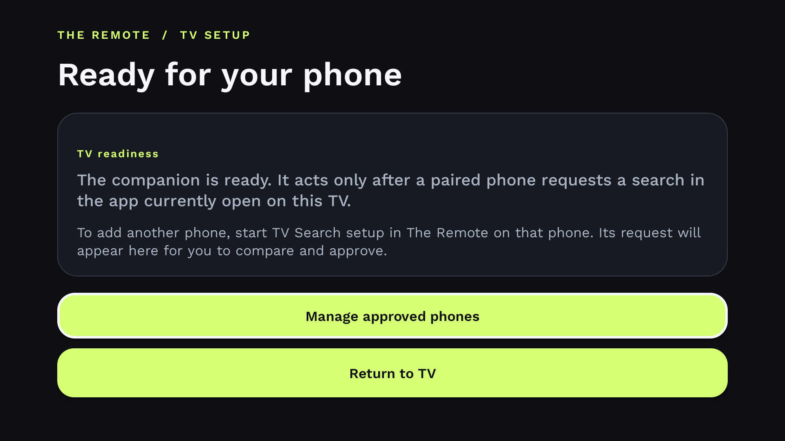

The phone remote for Android TV + Google TV
Your TV. In good hands.
Start with your phone.
Pair on your home network.
Find a compatible TV, pair once, and keep familiar controls close at hand.
Free. No ads. No app account.
How YouTube search works →Search support depends on your TV and its YouTube version.

03 / Give it a destination
The right TV.
The right room.
Give each saved TV a name and room. Pick the living-room screen without guessing which one is which.
Living room selected in this preview.
Illustration. No TV is connected.
Available controls
Made for your phone.
Depends on your TV.
Navigation, volume and app actions vary by TV model. TV companion compatibility and assisted search are still being verified.
Current beta invitations are for the Android phone app.
Check compatibility →Before you pair
Pick your TV.
Pair locally.
The Remote pairs on your home network with compatible Android TV and Google TV devices. Android TV Remote Service v2 is required.
Controls vary by TV model. YouTube search also depends on the TV's YouTube version. TV companion compatibility and assisted search are still being verified. Current beta invitations are for the Android phone app.
No app account. No developer cloud relay for remote commands. Your search history isn't saved by The Remote.
A TV-side setup check
TV setup.
Not paired.
This emulator capture shows the TV companion enabled and waiting for a phone. It does not show pairing, a search, results, or playback.
Beta requests are for the Android phone app. TV companion compatibility and assisted search are still being verified.
Regular YouTube search has a direct phone app-link route that does not require the companion. Behavior depends on your TV and its YouTube version.

TV companion enabled; waiting for a phone.
Android TV emulator capture. No phone pairing or search is shown.
Try it early
Your next remote
could be your phone.
The Remote is free. Request beta access with your Google Play email.
01 Send your request.
02 We review it privately.
03 If approved, accept your Play invitation.
A request doesn't enroll you or send an automatic invite. Invitations are sent manually through Google Play. Accept the invitation before installing. The public Play sign-up link is still pending.
Request received.
We'll review your request privately.
Google Play email
Approval comes with a manual Google Play invitation. Accept it before installing.
Enable JavaScript to verify and send your request.
When the TV needs a hand
Less guesswork.
More watching.
Android TV remote app can't find your TV? Start here
Find the failure stage before pairing everything again.
02 / 4 min readHow to type on Android TV with your phone
Get the right letters into the right search field.
03 / 4 min readLost your Android TV remote? What works before buying another
Recover control based on your TV’s network and setup state.
A few good questions
Before the
first click.
Which TVs does it work with?
Compatible Android TV and Google TV devices with Android TV Remote Service v2. Available controls vary by model.
Do I need the TV companion?
Regular YouTube search does not require the companion. The phone sends a search link directly to your selected TV over your home network. The TV and its YouTube version decide whether it works. TV companion compatibility and assisted search are still being verified.
Where does my search go?
To the TV you picked, over your local network. YouTube may process the search link under its own privacy policy. The Remote doesn't keep a search history.
Is the app free?
Yes. No ads, in-app purchases, or subscription. You don't need a The Remote app account.
Does a beta request give me access?
It requests access to the Android phone app by sending your email for private review. If approved, you'll receive a manual Google Play invitation. Accept that invitation before installing. Request beta access.
Ready when you are
A better remote.
Already in your pocket.
Request beta accessFree app. Private beta review. Manual Play invitations.